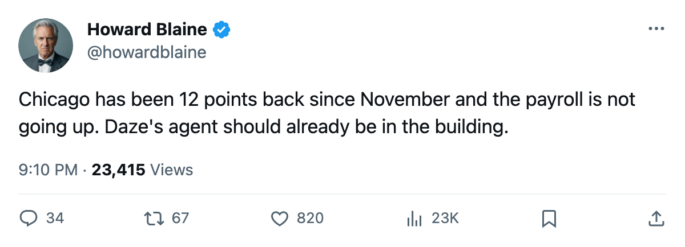
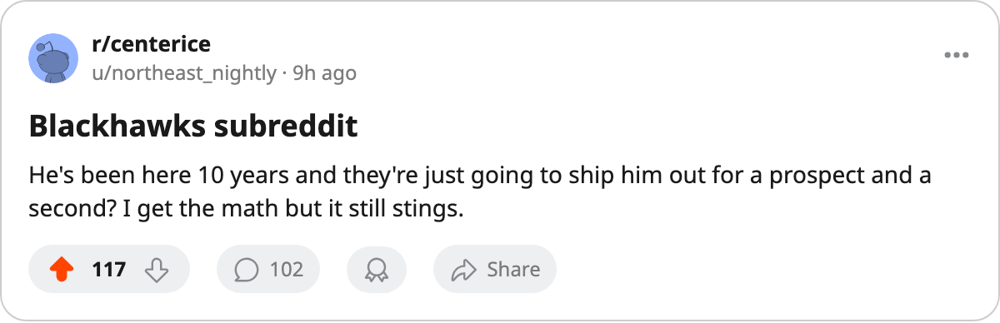

Eric Daze has 99 points on one year left at $3.00M, and the Blackhawks are 12 points back of 8th in the West
The club pays the third-lowest payroll in hockey and its best forward's contract expires in the summer
 Eric Daze87 has 99 points in 61 games, good for 8th in the league and a pace of 133 points over 82. He earns $3.00M with one year remaining on his contract. His club sits 14th in the West at 51 points, 12 back of what the arithmetic puts as 8th.
Eric Daze87 has 99 points in 61 games, good for 8th in the league and a pace of 133 points over 82. He earns $3.00M with one year remaining on his contract. His club sits 14th in the West at 51 points, 12 back of what the arithmetic puts as 8th.
Those three facts, held together, make the next three weeks at  Chicago Blackhawks more consequential than any stretch of this season has been. What the calendar has as the trade deadline is 23 days away.
Chicago Blackhawks more consequential than any stretch of this season has been. What the calendar has as the trade deadline is 23 days away.
The Blackhawks pay $39.27M, the third-lowest payroll in hockey, only Minnesota and Calgary spend less. At $0.77M per point, the club's rate is 17th of 30, squarely middle of the league. That number does not indict the spending; it says the spending is not producing a club that wins.
Daze's production has declined from last season, when he carried 153 points in 74 games and finished 3rd in the Art Ross race. The 133 pace this year is 20 points lower. His Book grade sits at 83 today, a base of 89 with the Index flat. At 29, in the 11th season since the Blackhawks drafted him 90th overall in 1993, the question the desk has been sitting with since November is whether this is the ceiling or the start of the slope.
The general manager said the quiet part
Jason Hughes spoke to The Tunnel's Jan Kowalczyk after the February 16 game. He did not dodge the subject.
"We're listening to everyone. Every call that comes in gets returned."
He is not competitive right now, and he has contracts coming up. The arithmetic bears him out.  St. Louis Blues holds 8th in the West at 63 points with the same number of games remaining. Chicago's maximum, winning out from here, is 93. St. Louis's floor, losing out, is 63. The Blues need to lose 31 of their last 21 games for the math to close, and they have won six straight and scored 30 goals in that stretch.
St. Louis Blues holds 8th in the West at 63 points with the same number of games remaining. Chicago's maximum, winning out from here, is 93. St. Louis's floor, losing out, is 63. The Blues need to lose 31 of their last 21 games for the math to close, and they have won six straight and scored 30 goals in that stretch.
The roster around Daze does not change the picture.  Alexei Zhamnov84 has 84 points at 34 and the same 1 year remaining.
Alexei Zhamnov84 has 84 points at 34 and the same 1 year remaining.  Jocelyn Thibault87, the goaltender graded 86, has 18 wins in 50 starts and a 3.29 goals-against average. The second-highest scorer on the club is
Jocelyn Thibault87, the goaltender graded 86, has 18 wins in 50 starts and a 3.29 goals-against average. The second-highest scorer on the club is  Theoren Fleury86 at 82 overall, and the third is
Theoren Fleury86 at 82 overall, and the third is  Steve Sullivan84 at 81. The gap between Daze and the next man is the only thing on the roster that would interest a contender.
Steve Sullivan84 at 81. The gap between Daze and the next man is the only thing on the roster that would interest a contender.
The contract structure is what separates this from a typical rental negotiation. One year at $3.00M means he is a pure deadline asset: either Chicago re-signs him this summer at an uncertain number, or the club trades him and gets something back.
The division tells the story
Chicago's record inside the Central Division is 6-6-3, and the head-to-head table shows a club that is neither dominating nor getting beaten badly by its peers. Against St. Louis, the club 12 points ahead, the season series is 1-1-1 with one overtime loss. Against Detroit, 7th and 20 points ahead, Chicago is 3-1-0. The division is not the problem. The problem is that the club cannot beat anyone outside the division well enough to climb the conference table.
The week ahead puts  Philadelphia Flyers in Chicago on Saturday and
Philadelphia Flyers in Chicago on Saturday and  Nashville Predators, the conference leader, on Tuesday. The Flyers are on a three-game losing streak and the Predators have lost two straight. Neither game changes the arithmetic. Daze has scored at better than a point per game in both seasons under the record, and the Blackhawks have won 18 games.
Nashville Predators, the conference leader, on Tuesday. The Flyers are on a three-game losing streak and the Predators have lost two straight. Neither game changes the arithmetic. Daze has scored at better than a point per game in both seasons under the record, and the Blackhawks have won 18 games.
Where this lands
The desk logged no prediction on Chicago at the season's quarter-mark, which was a gap. The standings at Christmas are the standings in April, and at Christmas Chicago sat 12th in the West. Fourteen games later it sits 14th. That is not a construction that corrects itself in February or March without a change.
The change available to Hughes in 23 days is the one the roster makes obvious. A club with 51 points, the third-lowest payroll, and a player of Daze's profile on an expiring deal is a seller by arithmetic alone. Whether the price is right is the question the next three weeks answer. Whether the club moves him is not a question at all. Every call gets returned.

